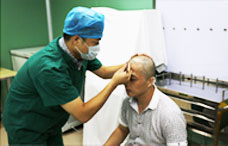

- 
李衡华植发整形专利技术发明人
01研发了FFS植发技术
02电动无痕毛囊移植笔创始人取得了中国植发第一项专利
03第一届中韩自体毛发移植人工纤维毛发技术学术研讨会授课医师
从事毛发移植临床工作近20年，精通高密式毛囊种植再生术，尤其对无痕毛发移植技术积累了丰富经验。多次参与韩国、日本、欧美专家学术交流，精通美容艺术在毛发移植中的运用，成就了其植发"形象设计师"的美誉
从事毛发移植临床工作近20年，精通高密式毛囊种植再生术，尤其对无痕毛发移植技术积累了丰富经验。多次参与韩国、日本、欧美专家学术交流，精通美容艺术在毛发移植中的运用，成就了其植发"形象设计师"的美誉
要求： 术前一天请戒烟戒酒。
特点： 医生会在需要移植的区域覆盖保鲜膜标示脱发范围，然后计算出所需面积与移植单位数量，以及设计合理的发际线。
要求： 患者采用舒适体位。
特点： 进行麻醉后，医生在高倍显微镜下使用超精细针头精准提取毛囊。
要求： 快捷、准确的分离毛囊以保证毛囊的存活率。
特点： 在利用高倍显微镜进行精准分离毛囊的同时还能对毛囊的特性进行分析，这样能够分析头发的厚度、角度、生长方向。
要求： 分离的毛囊精确植入患者的缺发部位。
特点： 移植前需要考虑头发的生长方向、角度、和头发的厚度，然后进行精密的移植，使头发具有原有头发的特性。
通过进口FUE毛囊提取机，专业的毛囊提取师进行快速、精准、合理的提取毛囊，再不影响供发区美观的同时可提取最大毛囊量。
手术安全无痕
手术成活率高
三天后正常洗头
首创签约治疗
术后三天
看着红色的是不是觉得有点小恐怖，其实这是红色的营养液，慢慢的会自己脱落。术后五天
植发区和取发区，取发区基本看不到印记了，植发区的结痂的红色营养液也开始脱落。术后十天
术后第十天的时候结痂也已经开始全部脱落了。术后一个月
移植的头发进入狂脱期，而后毛囊中会再次长出永不脱落的新发。术后半年
术后半年植发区毛发正常生长，自信回来了有没有。